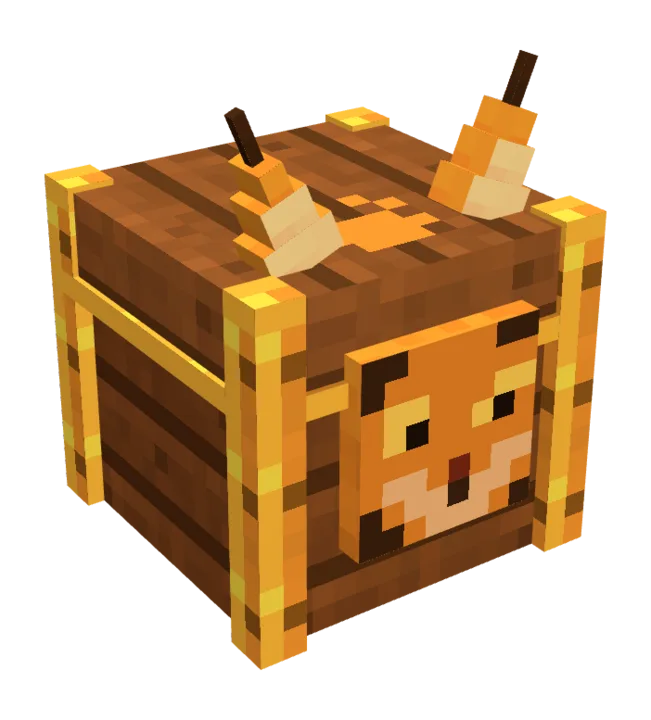
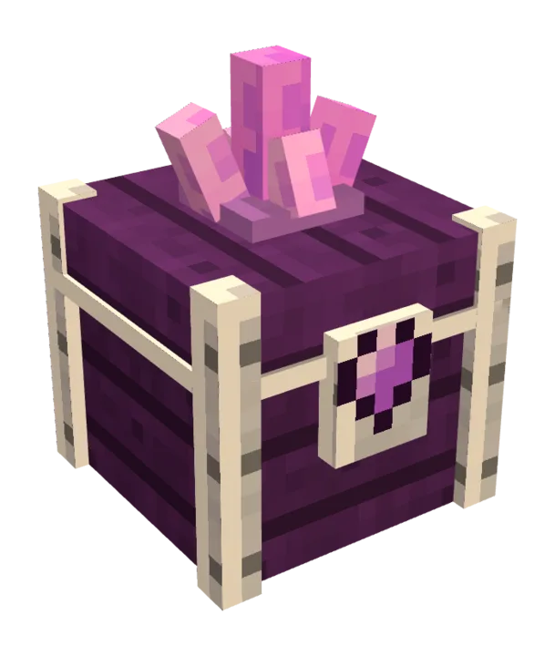
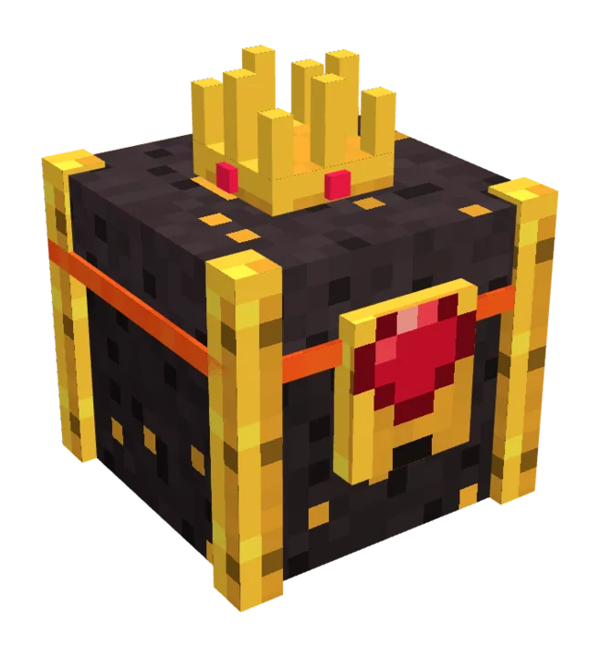

250 Coins + LuchsKiste
- Ein Schlüssel für die LuchsKiste
Ein Klick am Tag bringt Luchs auf der Serverliste nach oben und dir Belohnungen auf CityBuild.
Gib beim Voten genau deinen Minecraft-Namen ein. Die Belohnung bekommst du auf CityBuild. Bist du gerade woanders, wartet sie dort auf dich.



Lässt du einen Tag aus, beginnt deine Serie wieder bei 1. Im Spiel zeigt /vote deinen Stand, /vote top die besten Voter des Monats.